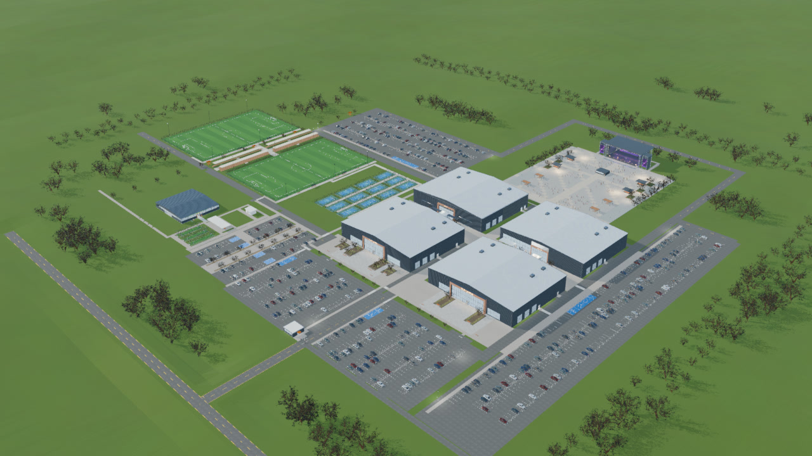

OURCAMPUS
All project work ↗
OURCAMPUS / DESIGN STUDIES
Middle Tennessee campus

Aerial from the later four-building drone preview
Play the drone preview
↗
Option 05 drawings
PDF ↗
Compare the two layouts
PDF ↗
Performance hall and hillside stills
↗
Open full Option 05 model
Desktop 3D ↗